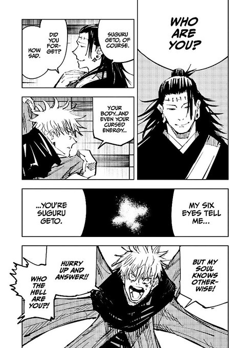

Jujutsu Kaisen and Shifting the Balance With Social Engineering

Sept 21, 2025
Imagine you have just responded to an incident and as you begin investigating you come face-to-face with an old friend. Someone you know intimately. You recognise their mannerisms, their voice, their very presence. Yet, unbeknownst to you, this person is not your friend at all. They are a perfect imitation. They look the same, talk the same, move the same. How could you possibly tell the difference?
In Jujutsu Kaisen Season 2, we witness a striking example of this. While protecting Tokyo, Gojo Satoru rushes to an emergency at Shinjuku Station. After a grueling battle with powerful curses he is physically and mentally drained. Then, seemingly out of nowhere Geto, his best friend long believed dead, appears before him. Gojo exclaims "Your body... and even your cursed energy... my Six Eyes tell me you're Suguru Geto... but my soul knows otherwise!"

In this moment, Gojo realises something is wrong. He can sense the deception, yet even with the power of his six eyes, he cannot understand why. The consequences are immediate and catastrophic wherein Gojo is sealed within the Prison Realm (Gokumonkyō), and the Jujutsu sorcerers lose their greatest defender. With their strongest gone, the balance of power irrevocably shifts in favour of curses.
Kenjaku's deception mirrors one of the most powerful tools in cyber security. Like Kenjaku exploiting Gojo's trust, threat actors manipulate human behaviour to bypass even the strongest systems. Social engineering is the art of influencing people to gain an advantage, convincing someone to reveal sensitive information, grant access, or take actions that compromise security. Unlike malware or hacking tools it targets people, not systems.
Its effectiveness comes from exploiting trust, authority, urgency, and emotion. A carefully crafted email can mimic a CEO, a phone call can elicit credentials, and a sense of emergency can make even cautious individuals act without thought. Just as Kenjaku weaponises the familiarity of Geto's face, voice, and presence threat actors leverage familiarity and confidence to manipulate targets.
Kenjaku exemplifies social engineering at its most sophisticated. He does not rely on brute force. He exploits trust, familiarity, and perception. By perfectly impersonating Geto, he creates hesitation and doubt even in Gojo, one of the strongest sorcerers alive. This mirrors real-world impersonation attacks such as CEO fraud, spear phishing, and pretexting where threat actors mimic trusted figures to manipulate targets into actions they normally would not take.
The consequences of his manipulation extend beyond individual hesitation. Characters like Itadori, Megumi, Yuta, and Kugisaki are forced to adapt in real-time, stepping into roles for which they may not be fully prepared. The cascading effect destabilises the entire Jujutsu ecosystem showing how the compromise of a single pivotal figure can compromise a network of support.
This mirrors cyber security realities. Many organisations have crown jewels, critical systems or key personnel whose compromise introduces evolving attacks. When threat actors manipulate high-trust individuals or breach central systems, they gain unprecedented leverage. The psychological impact amplifies the technical damage. Hesitation, confusion, and reduced morale make further attacks more likely.
I believe the lesson is clear. In both Jujutsu Kaisen and cyber security, the strength of a system depends on the network of trust and reliance that supports it. Human factors are often the weakest link. Even the most powerful systems, whether Gojo or a secured IT infrastructure, can be undermined if trust is exploited. Vigilance, verification, and contingency planning are essential to prevent a single manipulation from collapsing the entire system, or in Gojo's case from being sealed, leaving everyone vulnerable.